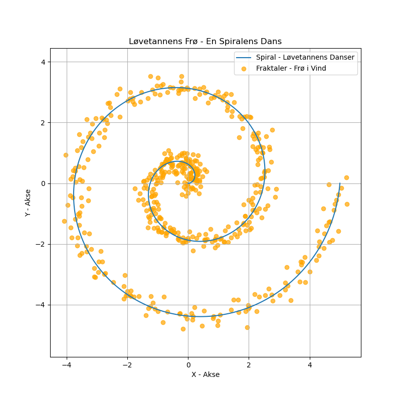

Dagens dikt
En løvetann blåser kloden rundt,
Sprer frø som tall i luftens bunt.
En spiral danser i fritt rom,
med mønstre skjult – matematikken kommer om!
Disse myke linjer tegnes, se,
fraktaler i vinden, ren poesi.

Kode
import numpy as np
import matplotlib.pyplot as plt
# Definer parametere for spiralen
theta = np.linspace(0, 4 * np.pi, 500) # Vinkel fra starten til slutten
r = np.linspace(0, 5, 500) # Radialt trinn
# Løvetannens dansende spiral - polarkoordinater
x = r * np.cos(theta) # X-koordinater
y = r * np.sin(theta) # Y-koordinater
# Fraktaler i vinden med poesi - lag tilfeldige frø på spiralen
random_offsets_x = np.random.normal(scale=0.2, size=500)
random_offsets_y = np.random.normal(scale=0.2, size=500)
fractal_x = x + random_offsets_x
fractal_y = y + random_offsets_y
# Plott løvetannens dans og fraktaler
plt.figure(figsize=(8, 8))
plt.plot(x, y, label='Spiral - Løvetannens Danser') # Spiralkurven
plt.scatter(fractal_x, fractal_y, color='orange', alpha=0.7, label='Fraktaler - Frø i Vind') # "Frøene"
plt.title("Løvetannens Frø - En Spiralens Dans")
plt.xlabel("X - Akse")
plt.ylabel("Y - Akse")
plt.legend()
plt.grid(True)
plt.axis('equal') # Lik skalering for bedre visualisering
plt.savefig('2025-03-20-19-58-05.png')